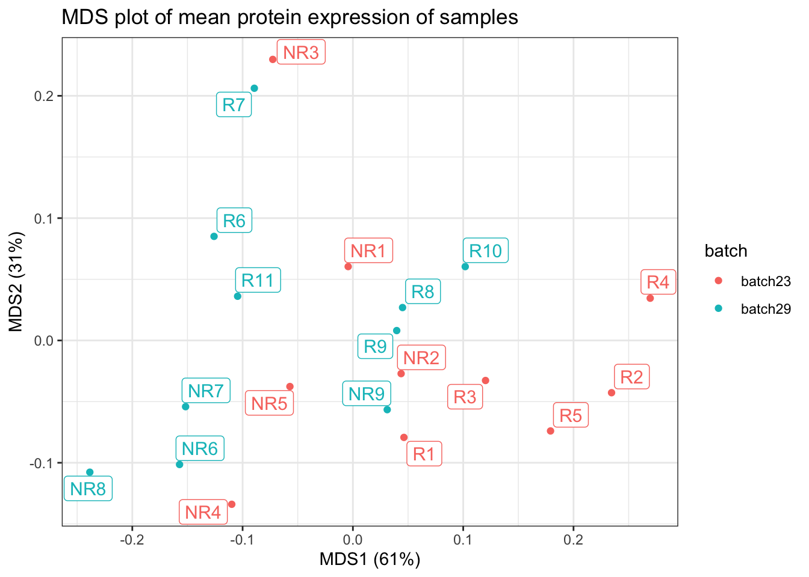
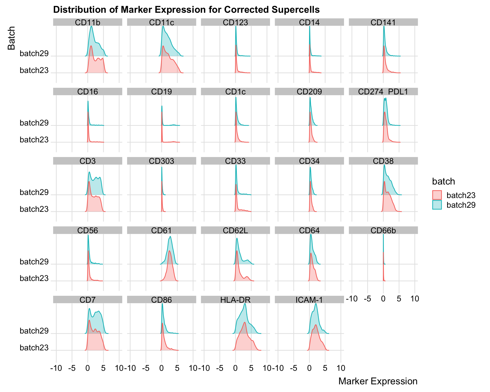
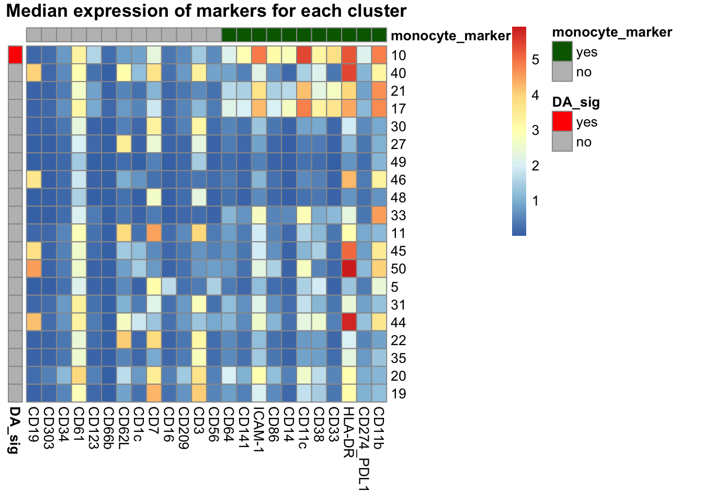
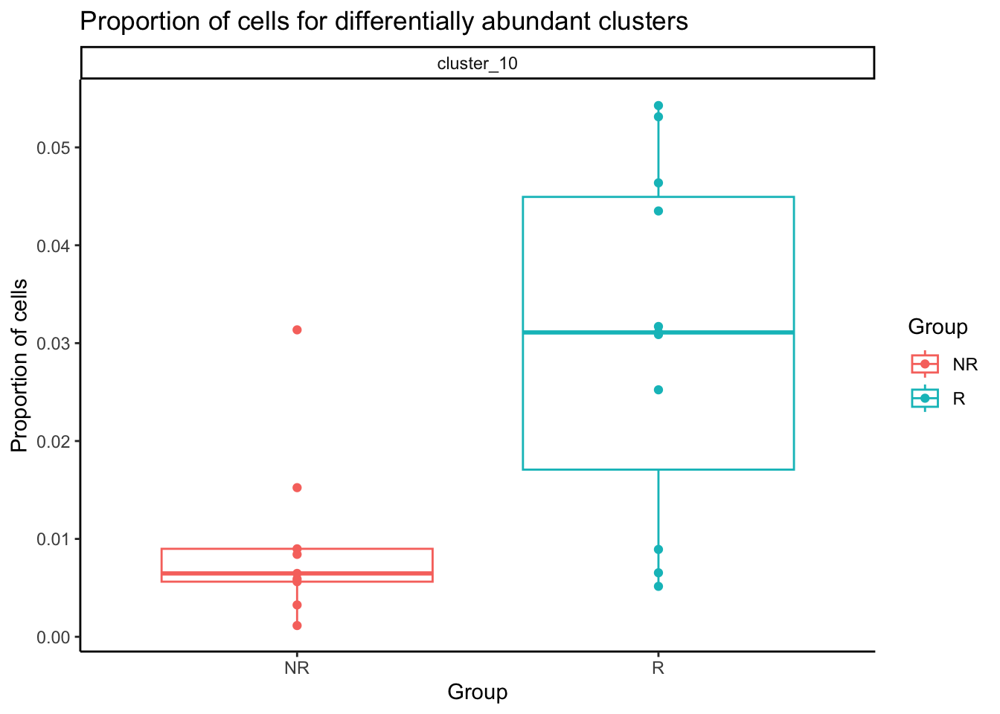
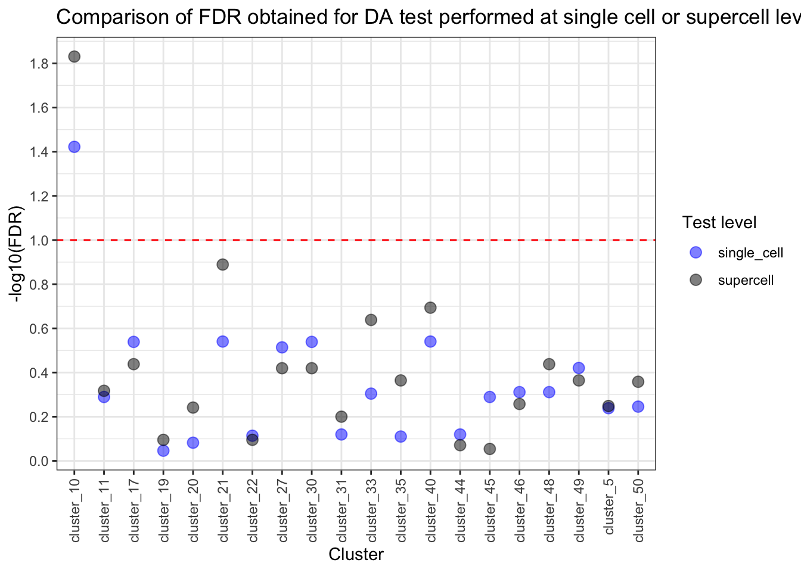
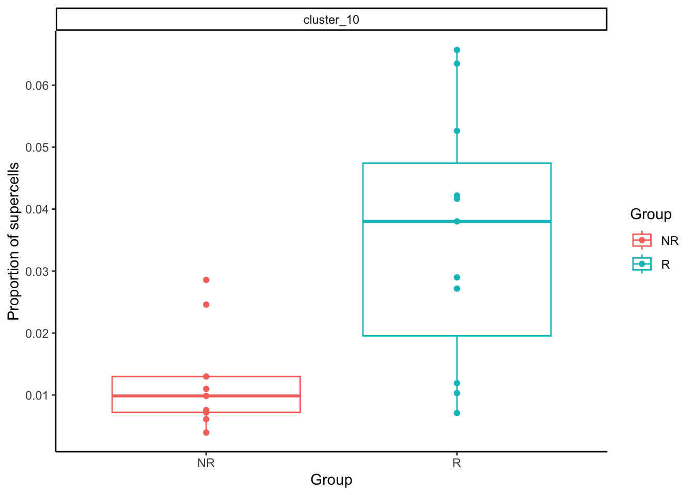

Last updated: 2023-07-28
Checks: 7 0
Knit directory: SuperCellCyto-analysis/
This reproducible R Markdown analysis was created with workflowr (version 1.7.0). The Checks tab describes the reproducibility checks that were applied when the results were created. The Past versions tab lists the development history.
Great! Since the R Markdown file has been committed to the Git repository, you know the exact version of the code that produced these results.
Great job! The global environment was empty. Objects defined in the global environment can affect the analysis in your R Markdown file in unknown ways. For reproduciblity it’s best to always run the code in an empty environment.
The command set.seed(42) was run prior to running the
code in the R Markdown file. Setting a seed ensures that any results
that rely on randomness, e.g. subsampling or permutations, are
reproducible.
Great job! Recording the operating system, R version, and package versions is critical for reproducibility.
Nice! There were no cached chunks for this analysis, so you can be confident that you successfully produced the results during this run.
Great job! Using relative paths to the files within your workflowr project makes it easier to run your code on other machines.
Great! You are using Git for version control. Tracking code development and connecting the code version to the results is critical for reproducibility.
The results in this page were generated with repository version 402358b. See the Past versions tab to see a history of the changes made to the R Markdown and HTML files.
Note that you need to be careful to ensure that all relevant files for
the analysis have been committed to Git prior to generating the results
(you can use wflow_publish or
wflow_git_commit). workflowr only checks the R Markdown
file, but you know if there are other scripts or data files that it
depends on. Below is the status of the Git repository when the results
were generated:
Ignored files:
Ignored: .DS_Store
Ignored: .Rproj.user/
Ignored: code/.DS_Store
Ignored: data/.DS_Store
Ignored: data/bodenmiller_cytof/
Ignored: data/explore_supercell_purity_clustering/
Ignored: data/haas_bm/
Ignored: data/oetjen_bm_dataset/
Ignored: data/trussart_cytofruv/
Ignored: output/.DS_Store
Ignored: output/bodenmiller_cytof/
Ignored: output/explore_supercell_purity_clustering/
Ignored: output/label_transfer/
Ignored: output/oetjen_b_cell_panel/
Ignored: output/trussart_cytofruv/
Untracked files:
Untracked: README.html
Untracked: analysis/ref.bib
Untracked: code/README.html
Untracked: code/b_cell_identification/
Untracked: code/batch_correction/
Untracked: code/bodenmiller_data/
Untracked: code/explore_supercell_purity_clustering/
Untracked: code/label_transfer/
Untracked: data/README.html
Untracked: output/README.html
Unstaged changes:
Modified: .gitignore
Modified: README.md
Modified: _workflowr.yml
Modified: analysis/_site.yml
Modified: code/README.md
Modified: data/README.md
Modified: output/README.md
Note that any generated files, e.g. HTML, png, CSS, etc., are not included in this status report because it is ok for generated content to have uncommitted changes.
These are the previous versions of the repository in which changes were
made to the R Markdown (analysis/da_test.Rmd) and HTML
(docs/da_test.html) files. If you’ve configured a remote
Git repository (see ?wflow_git_remote), click on the
hyperlinks in the table below to view the files as they were in that
past version.
| File | Version | Author | Date | Message |
|---|---|---|---|---|
| Rmd | 402358b | Givanna Putri | 2023-07-28 | wflow_publish(c("analysis/*Rmd")) |
In this analysis, we investigated the capacity to conduct differential abundance analysis using supercells. We applied SuperCellCyto and Propeller (Phipson et al. 2022) to a mass cytometry dataset quantifying the baseline samples (pre-treatment) of melanoma patients who subsequently either responded (R) or did not respond (NR) to an anti-PD1 immunotherapy (Anti_PD1 dataset). There are 20 samples in total (10 responders and 10 non-responders samples). The objective of this analysis was to identify a rare subset of monocytes, characterised as CD14+, CD33+, HLA-DRhi, ICAM-1+, CD64+, CD141+, CD86+, CD11c+, CD38+, PD-L1+, CD11b+, whose abundance correlates strongly with the patient’s response status to anti-PD1 immunotherapy (Krieg et al. 2018) (Weber et al. 2019).
The analysis protocol is as the following:
library(data.table)
library(ggplot2)
library(limma)
library(speckle)
library(SuperCellCyto)
library(parallel)
library(here)
library(BiocParallel)
library(Spectre)
library(pheatmap)
library(scales)
library(cyCombine)
library(HDCytoData)
library(ggrepel)
library(ggridges)sce <- Krieg_Anti_PD_1_SE()
cell_info <- data.table(as.data.frame(rowData(sce)))
markers <- data.table(as.data.frame(colData(sce)))
cell_dat <- data.table(as.data.frame(assay(sce)))
cell_dat <- cbind(cell_dat, cell_info)# keep only the cell type and cell state markers
markers <- markers[marker_class != "none"]
markers_name <- markers$marker_name
# asinh transformation with co-factor 5
markers_name_asinh <- paste0(markers_name, "_asinh_cf5")
monocyte_markers <- paste0(
c(
"CD14", "CD33", "HLA-DR", "ICAM-1", "CD64", "CD141", "CD86", "CD11c",
"CD38", "CD274_PDL1", "CD11b"
),
"_asinh_cf5"
)cell_dat <- cell_dat[, c(markers_name, "group_id", "batch_id", "sample_id"), with = FALSE]
# arc-sinh transformation with co-factor 5
cell_dat[, (markers_name_asinh) := lapply(.SD, function(x) asinh(x / 5)), .SDcols = markers_name]
# save ram, remove untransformed markers
cell_dat[, c(markers_name) := NULL]
# Change group field into factor
cell_dat[, group_id := factor(group_id, levels = c("NR", "R"))]
cell_dat[, cell_id := paste0("cell_", seq(nrow(cell_dat)))]BPPARAM <- MulticoreParam(workers = detectCores() - 1, tasks = length(unique(cell_dat$sample_id)))
supercell_obj <- runSuperCellCyto(
dt = cell_dat,
markers = markers_name_asinh,
sample_colname = "sample_id",
cell_id_colname = "cell_id",
gam = 20,
BPPARAM = BPPARAM,
load_balancing = TRUE
)
supercell_mat <- supercell_obj$supercell_expression_matrix
supercell_cell_map <- supercell_obj$supercell_cell_map
sample_info <- unique(cell_info)
supercell_mat <- merge.data.table(supercell_mat, sample_info)setnames(supercell_mat, "sample_id", "sample")
setnames(supercell_mat, "batch_id", "batch")
cycombine_corrected <- batch_correct(
df = supercell_mat[, c(markers_name_asinh, "batch", "sample", "group_id"), with = FALSE],
xdim = 4,
ydim = 4,
seed = 42,
markers = markers_name_asinh,
covar = "group_id"
)Check outcome
setnames(cycombine_corrected, "sample", "sample_id")
make.mds.plot(data.table(cycombine_corrected), "sample_id", markers_name_asinh, "batch")
all_data <- melt(cycombine_corrected, id.vars = c("batch"), measure.vars = markers_name_asinh)
all_data$variable <- gsub("_asinh_cf5", "", all_data$variable)
ggplot(all_data, aes(x = value, y = batch, fill = batch, color = batch)) +
geom_density_ridges(alpha = 0.3) +
facet_wrap(~variable) +
theme_ridges() +
scale_x_continuous(breaks = pretty_breaks(n = 5), limits = c(-10, 10)) +
labs(x = "Marker Expression", y = "Batch", title = "Distribution of Marker Expression for Corrected Supercells")
cycombine_corrected <- run.flowsom(
cycombine_corrected,
use.cols = markers_name_asinh,
xdim = 20,
ydim = 20,
meta.k = 50,
clust.seed = 42,
meta.seed = 42
)Expand to single cell.
cycombine_corrected$SuperCellId <- supercell_mat$SuperCellId
expanded_supercell <- merge.data.table(
supercell_cell_map,
cycombine_corrected[, c("SuperCellId", "FlowSOM_cluster", "FlowSOM_metacluster", "group_id", "batch")],
by.x = "SuperCellID",
by.y = "SuperCellId"
)Remove underrepresented clusters, that is those which contain less than 3 cells from each sample.
nsamples_min <- nrow(sample_info)
clust_cnt <- table(expanded_supercell$FlowSOM_metacluster, expanded_supercell$Sample)
clust_to_keep <- as.numeric(names(which(rowSums(clust_cnt > 3) >= nsamples_min)))
expanded_supercell_sub <- expanded_supercell[FlowSOM_metacluster %in% clust_to_keep]
supercell_mat_sub <- cycombine_corrected[FlowSOM_metacluster %in% clust_to_keep]Run propeller.
prop <- getTransformedProps(
clusters = expanded_supercell_sub$FlowSOM_metacluster,
sample = expanded_supercell_sub$Sample
)
sample_info[, sample_id := factor(sample_id, levels = colnames(prop$Counts))]
sample_info <- sample_info[order(sample_id)]
designAS <- model.matrix(~ 0 + sample_info$group_id + sample_info$batch_id)
colnames(designAS) <- c("NR", "R", "batch29vs23")
mycontr <- makeContrasts(NR - R, levels = designAS)
test_res <- propeller.ttest(
prop.list = prop, design = designAS, contrasts = mycontr,
robust = TRUE, trend = FALSE, sort = TRUE
)
test_res PropMean.NR PropMean.R PropRatio Tstatistic P.Value FDR
10 0.009601792 0.03061872 0.3135922 -3.5590416 0.001892127 0.03784255
40 0.012490330 0.02025104 0.6167749 -2.2758926 0.033632630 0.28811818
21 0.032073310 0.05842642 0.5489522 -2.1539416 0.043217727 0.28811818
17 0.020685505 0.03743361 0.5525918 -1.8974612 0.071837287 0.28919505
30 0.138740444 0.11090339 1.2510027 1.8925877 0.072298763 0.28919505
27 0.068351875 0.04645450 1.4713724 1.7678334 0.091849973 0.30616658
49 0.054706416 0.03987415 1.3719771 1.5646622 0.132857009 0.37959145
46 0.025689194 0.02968763 0.8653164 -1.3013122 0.207267762 0.48823441
48 0.114438934 0.09650306 1.1858581 1.2651217 0.219705487 0.48823441
33 0.031377087 0.04877955 0.6432426 -1.1888124 0.248003979 0.49600796
11 0.059371391 0.05315854 1.1168741 1.0830324 0.291090138 0.51359755
45 0.036749978 0.03030221 1.2127823 1.0448015 0.308158532 0.51359755
50 0.012762592 0.01632280 0.7818876 -0.9181109 0.369159549 0.56793777
5 0.033344912 0.02326277 1.4334022 0.8518347 0.404075979 0.57725140
31 0.072462595 0.08381600 0.8645437 -0.5502847 0.588027299 0.75915363
44 0.015964091 0.01890996 0.8442161 -0.5218560 0.607322901 0.75915363
22 0.023587264 0.03029538 0.7785761 -0.4550988 0.653786327 0.76916038
35 0.062025826 0.04909547 1.2633716 0.3930067 0.698341888 0.77593543
20 0.081228254 0.07990172 1.0166021 -0.2751488 0.785935918 0.82730097
19 0.094348211 0.09600308 0.9827624 0.1281642 0.899240178 0.89924018Identify which clusters are our rare monocyte.
median_exp <- supercell_mat_sub[, lapply(.SD, median), by = FlowSOM_metacluster, .SDcols = markers_name_asinh]
median_exp[, FlowSOM_metacluster := factor(FlowSOM_metacluster, levels = rownames(test_res))]
median_exp <- median_exp[order(FlowSOM_metacluster)]
median_exp_df <- data.frame(median_exp[, markers_name_asinh, with = FALSE])
names(median_exp_df) <- gsub("_asinh_cf5", "", markers_name_asinh)
rownames(median_exp_df) <- median_exp$FlowSOM_metacluster
row_meta <- data.table(pval = test_res$FDR)
row_meta[, DA_sig := ifelse(pval <= 0.1, "yes", "no")]
row_meta <- data.frame(DA_sig = row_meta$DA_sig)
rownames(row_meta) <- rownames(test_res)
col_meta <- data.table(marker = markers_name_asinh)
col_meta[, monocyte_marker := ifelse(marker %in% monocyte_markers, "yes", "no")]
col_meta_df <- data.frame(monocyte_marker = col_meta$monocyte)
rownames(col_meta_df) <- gsub("_asinh_cf5", "", col_meta$marker)
# So monocyte markers are together
col_order <- col_meta[order(monocyte_marker)]$marker
col_order <- gsub("_asinh_cf5", "", col_order)
median_exp_df <- median_exp_df[col_order]
pheatmap(
mat = median_exp_df,
annotation_row = row_meta,
annotation_col = col_meta_df,
cluster_rows = FALSE,
cluster_cols = FALSE,
annotation_colors = list(
monocyte_marker = c("yes" = "darkgreen", "no" = "grey"),
DA_sig = c("yes" = "red", "no" = "grey")
),
main = "Median expression of markers for each cluster"
)
Cluster 10 is our monocyte cluster. Plot the proportion of single cells in the cluster out.
dt_prop <- merge.data.table(
x = data.table(prop$Proportions),
y = sample_info,
by.x = "sample",
by.y = "sample_id"
)
sig_clust <- rownames(test_res[test_res$FDR <= 0.1, ])
dt_prop <- dt_prop[clusters %in% sig_clust, ]
dt_prop[, clusters := paste0("cluster_", clusters)]ggplot(dt_prop, aes(x = group_id, y = N, color = group_id)) +
geom_boxplot(outlier.shape = NA) +
geom_point() +
facet_wrap(~clusters) +
theme_classic() +
scale_y_continuous(breaks = pretty_breaks(n = 5)) +
labs(
x = "Group", y = "Proportion of cells",
title = "Proportion of cells for differentially abundant clusters",
colour = "Group"
)
supercell_mat_sub_sup <- cycombine_corrected[FlowSOM_metacluster %in% unique(expanded_supercell_sub$FlowSOM_metacluster)]Run propeller.
prop_sup <- getTransformedProps(
clusters = supercell_mat_sub_sup$FlowSOM_metacluster,
sample = supercell_mat_sub_sup$sample_id
)
sample_info[, sample_id := factor(sample_id, levels = colnames(prop$Counts))]
sample_info <- sample_info[order(sample_id)]
designAS <- model.matrix(~ 0 + sample_info$group_id + sample_info$batch_id)
colnames(designAS) <- c("NR", "R", "batch29vs23")
mycontr <- makeContrasts(NR - R, levels = designAS)
test_res_sup <- propeller.ttest(
prop.list = prop_sup, design = designAS, contrasts = mycontr,
robust = TRUE, trend = FALSE, sort = TRUE
)
test_res_sup PropMean.NR PropMean.R PropRatio Tstatistic P.Value FDR
10 0.01242160 0.03537876 0.3511034 -3.8665793 0.0007382332 0.01476466
21 0.03282321 0.05509045 0.5958058 -2.6861763 0.0129125170 0.12912517
40 0.02105237 0.03275724 0.6426785 -2.3012949 0.0303700871 0.20246725
33 0.03278675 0.05073134 0.6462820 -2.1044489 0.0460027538 0.23001377
17 0.02496436 0.03564663 0.7003287 -1.6750461 0.1069151624 0.36475812
48 0.11246613 0.09408360 1.1953850 1.6624971 0.1094274357 0.36475812
27 0.07123458 0.05376325 1.3249678 1.4873917 0.1499399750 0.38053665
30 0.10484325 0.08977834 1.1678011 1.4787712 0.1522146584 0.38053665
49 0.06808453 0.05579387 1.2202870 1.2961670 0.2072509950 0.43214793
35 0.06157595 0.04799909 1.2828566 1.2705510 0.2160739634 0.43214793
50 0.02287560 0.02715139 0.8425202 -1.2020423 0.2410802597 0.43832774
11 0.05813022 0.05230540 1.1113618 1.0845044 0.2889217062 0.48153618
46 0.03550831 0.04058908 0.8748241 -0.9349789 0.3591171173 0.55248787
5 0.04231664 0.03278286 1.2908159 0.8662153 0.3949541354 0.56422019
20 0.06041808 0.06893079 0.8765035 -0.8065465 0.4301517762 0.57353570
31 0.06161053 0.05263699 1.1704797 0.6775355 0.5045494340 0.63068679
19 0.08478672 0.08425002 1.0063704 0.4020548 0.6912038560 0.80299631
22 0.02607141 0.02868215 0.9089767 -0.3590531 0.7226966809 0.80299631
44 0.02393346 0.02145948 1.1152859 0.2476044 0.8065477403 0.84899762
45 0.04209632 0.04018926 1.0474518 0.1489623 0.8828286910 0.88282869Compare the FDR
common_clusters <- intersect(rownames(test_res), rownames(test_res_sup))
pvalue_comparison <- data.table(
clusters = common_clusters,
pval_single_cell = test_res[common_clusters, ]$FDR,
pval_supercell = test_res_sup[common_clusters, ]$FDR
)
pvalue_comparison[, pval_single_cell_sig := ifelse(pval_single_cell <= 0.1, "yes", "no")]
pvalue_comparison[, pval_supercell_sig := ifelse(pval_supercell <= 0.1, "yes", "no")]
pvalue_comparison[, clusters := paste0("cluster_", clusters)]
pvalue_comparison_molten <- melt(pvalue_comparison,
id.vars = "clusters",
measure.vars = c("pval_single_cell", "pval_supercell")
)
pvalue_comparison_molten[, variable := gsub("pval_", "", variable)]
pvalue_comparison_molten[, log_val := -log10(value)]ggplot(pvalue_comparison_molten, aes(x = clusters, y = log_val, color = variable)) +
geom_point(alpha = 0.5, size = 3) +
geom_hline(yintercept = -log10(0.1), linetype = "dashed", color = "red") +
scale_color_manual(values = c("single_cell" = "blue", "supercell" = "black")) +
scale_y_continuous(breaks = pretty_breaks(n = 10)) +
labs(
x = "Cluster", y = "-log10(FDR)", colour = "Test level",
title = "Comparison of FDR obtained for DA test performed at single cell or supercell level"
) +
theme_bw() +
theme(axis.text.x = element_text(angle = 90, vjust = 0.5, hjust = 1))
The difference in proportion of supercells for our rare monocyte subset (cluster 10) is also significant. Let’s plot it out.
clust_to_look <- c(10)
supercell_prop <- data.table(prop_sup$Proportions)
supercell_prop <- supercell_prop[clusters %in% clust_to_look]
supercell_prop[, type := "supercell"]
supercell_prop <- merge.data.table(supercell_prop, sample_info, by.x = "sample", by.y = "sample_id")
supercell_prop[, clusters := paste0("cluster_", clusters)]ggplot(supercell_prop, aes(x = group_id, y = N, color = group_id)) +
geom_boxplot(outlier.shape = NA) +
geom_point() +
facet_wrap(~clusters) +
theme_classic() +
scale_y_continuous(breaks = pretty_breaks(n = 5)) +
labs(x = "Group", y = "Proportion of supercells", colour = "Group")
sessionInfo()R version 4.2.3 (2023-03-15)
Platform: aarch64-apple-darwin20 (64-bit)
Running under: macOS Monterey 12.6
Matrix products: default
BLAS: /Library/Frameworks/R.framework/Versions/4.2-arm64/Resources/lib/libRblas.0.dylib
LAPACK: /Library/Frameworks/R.framework/Versions/4.2-arm64/Resources/lib/libRlapack.dylib
locale:
[1] en_US.UTF-8/en_US.UTF-8/en_US.UTF-8/C/en_US.UTF-8/en_US.UTF-8
attached base packages:
[1] stats4 parallel stats graphics grDevices utils datasets
[8] methods base
other attached packages:
[1] FlowSOM_2.6.0 igraph_1.4.0
[3] ggridges_0.5.4 ggrepel_0.9.3
[5] HDCytoData_1.18.0 flowCore_2.10.0
[7] SummarizedExperiment_1.28.0 Biobase_2.58.0
[9] GenomicRanges_1.50.2 GenomeInfoDb_1.34.9
[11] IRanges_2.32.0 S4Vectors_0.36.1
[13] MatrixGenerics_1.10.0 matrixStats_0.63.0
[15] ExperimentHub_2.6.0 AnnotationHub_3.6.0
[17] BiocFileCache_2.6.1 dbplyr_2.3.0
[19] BiocGenerics_0.44.0 cyCombine_0.2.15
[21] scales_1.2.1 pheatmap_1.0.12
[23] Spectre_1.0.0-0 BiocParallel_1.32.5
[25] here_1.0.1 SuperCellCyto_0.99.0
[27] speckle_0.99.7 limma_3.54.1
[29] ggplot2_3.4.1 data.table_1.14.8
[31] workflowr_1.7.0
loaded via a namespace (and not attached):
[1] rappdirs_0.3.3 scattermore_0.8
[3] SeuratObject_4.1.3 tidyr_1.3.0
[5] bit64_4.0.5 knitr_1.42
[7] irlba_2.3.5.1 DelayedArray_0.24.0
[9] KEGGREST_1.38.0 RCurl_1.98-1.10
[11] generics_0.1.3 callr_3.7.3
[13] cowplot_1.1.1 RSQLite_2.3.0
[15] RANN_2.6.1 future_1.31.0
[17] bit_4.0.5 spatstat.data_3.0-0
[19] httpuv_1.6.9 assertthat_0.2.1
[21] viridis_0.6.2 xfun_0.39
[23] jquerylib_0.1.4 evaluate_0.20
[25] SuperCell_1.0 promises_1.2.0.1
[27] fansi_1.0.4 DBI_1.1.3
[29] htmlwidgets_1.6.1 spatstat.geom_3.0-6
[31] purrr_1.0.1 ellipsis_0.3.2
[33] dplyr_1.1.0 ggnewscale_0.4.8
[35] ggpubr_0.6.0 backports_1.4.1
[37] cytolib_2.10.0 annotate_1.76.0
[39] deldir_1.0-6 vctrs_0.5.2
[41] SingleCellExperiment_1.20.0 ROCR_1.0-11
[43] abind_1.4-5 cachem_1.0.6
[45] withr_2.5.0 ggforce_0.4.1
[47] progressr_0.13.0 sctransform_0.3.5
[49] goftest_1.2-3 cluster_2.1.4
[51] lazyeval_0.2.2 crayon_1.5.2
[53] genefilter_1.80.3 spatstat.explore_3.0-6
[55] edgeR_3.40.2 pkgconfig_2.0.3
[57] labeling_0.4.2 tweenr_2.0.2
[59] nlme_3.1-162 rlang_1.0.6
[61] globals_0.16.2 lifecycle_1.0.3
[63] miniUI_0.1.1.1 filelock_1.0.2
[65] rsvd_1.0.5 rprojroot_2.0.3
[67] polyclip_1.10-4 lmtest_0.9-40
[69] Matrix_1.5-3 carData_3.0-5
[71] zoo_1.8-11 whisker_0.4.1
[73] processx_3.8.0 png_0.1-8
[75] viridisLite_0.4.1 bitops_1.0-7
[77] getPass_0.2-2 ConsensusClusterPlus_1.62.0
[79] KernSmooth_2.23-20 Biostrings_2.66.0
[81] blob_1.2.3 stringr_1.5.0
[83] parallelly_1.34.0 spatstat.random_3.1-3
[85] rstatix_0.7.2 ggsignif_0.6.4
[87] memoise_2.0.1 magrittr_2.0.3
[89] plyr_1.8.8 ica_1.0-3
[91] zlibbioc_1.44.0 compiler_4.2.3
[93] RColorBrewer_1.1-3 fitdistrplus_1.1-8
[95] cli_3.6.0 XVector_0.38.0
[97] listenv_0.9.0 patchwork_1.1.2
[99] pbapply_1.7-0 ps_1.7.2
[101] MASS_7.3-58.2 mgcv_1.8-42
[103] tidyselect_1.2.0 stringi_1.7.12
[105] RProtoBufLib_2.10.0 highr_0.10
[107] yaml_2.3.7 locfit_1.5-9.7
[109] grid_4.2.3 sass_0.4.5
[111] tools_4.2.3 future.apply_1.10.0
[113] rstudioapi_0.14 git2r_0.31.0
[115] gridExtra_2.3 farver_2.1.1
[117] Rtsne_0.16 digest_0.6.31
[119] BiocManager_1.30.19 shiny_1.7.4
[121] Rcpp_1.0.10 car_3.1-1
[123] broom_1.0.3 BiocVersion_3.16.0
[125] later_1.3.0 RcppAnnoy_0.0.20
[127] httr_1.4.4 AnnotationDbi_1.60.0
[129] colorspace_2.1-0 XML_3.99-0.13
[131] fs_1.6.1 tensor_1.5
[133] reticulate_1.28 splines_4.2.3
[135] statmod_1.5.0 uwot_0.1.14
[137] spatstat.utils_3.0-1 sp_1.6-0
[139] plotly_4.10.1 xtable_1.8-4
[141] jsonlite_1.8.4 R6_2.5.1
[143] pillar_1.8.1 htmltools_0.5.4
[145] mime_0.12 glue_1.6.2
[147] fastmap_1.1.0 interactiveDisplayBase_1.36.0
[149] codetools_0.2-19 utf8_1.2.3
[151] lattice_0.20-45 bslib_0.4.2
[153] spatstat.sparse_3.0-0 tibble_3.1.8
[155] sva_3.46.0 curl_5.0.0
[157] leiden_0.4.3 colorRamps_2.3.1
[159] kohonen_3.0.11 survival_3.5-3
[161] rmarkdown_2.20 munsell_0.5.0
[163] GenomeInfoDbData_1.2.9 reshape2_1.4.4
[165] gtable_0.3.1 Seurat_4.3.0